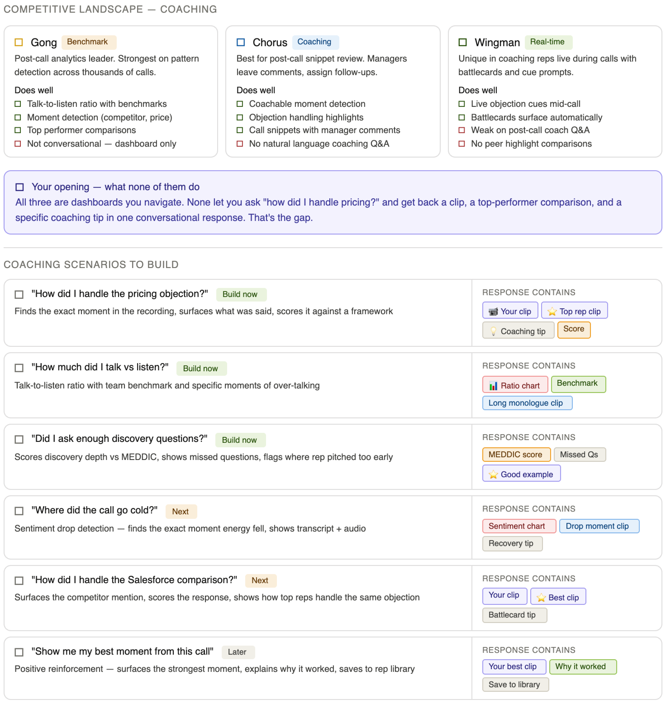
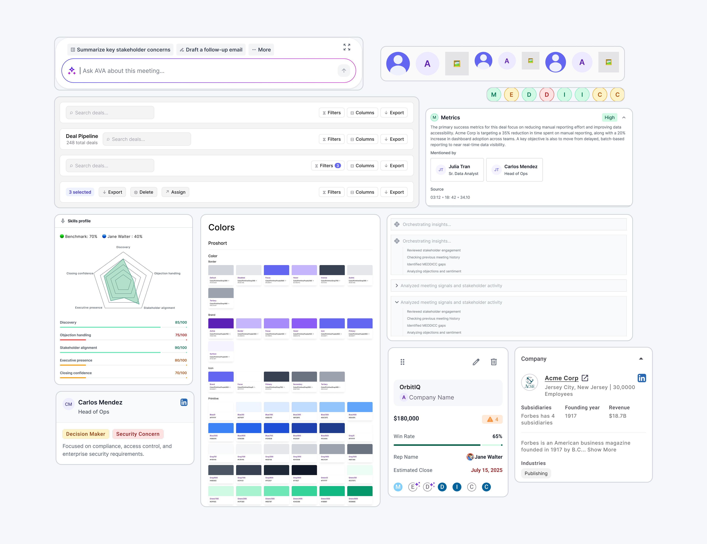
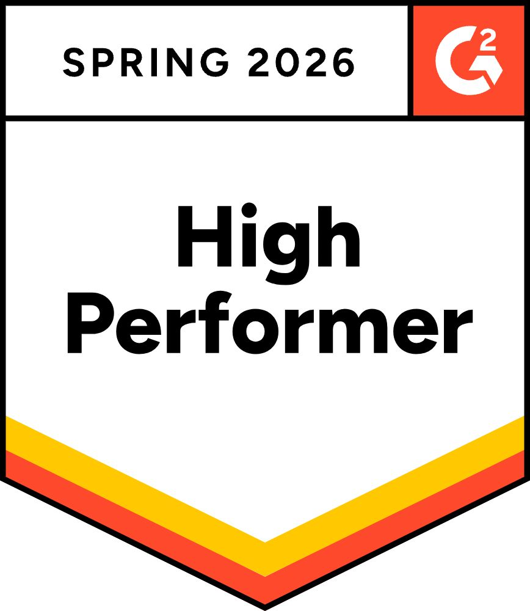
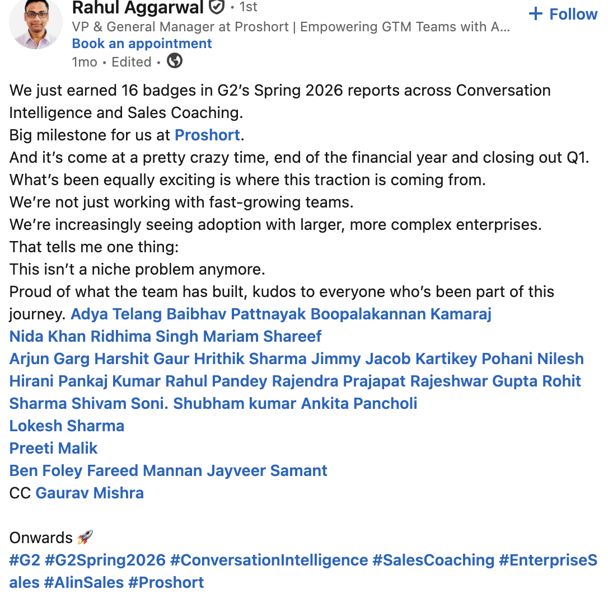
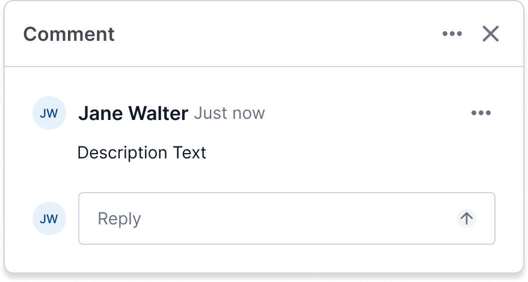

Turning every
sales call into
closing work.
Proshort is the meeting intelligence layer for revenue teams — capture, recall, coach, rehearse. I led the UX across three flows: Meeting Intelligence, Ask Anything, and AI Roleplay.
Include pricing & onboarding timeline
Calls happen.
The work after doesn't.
A rep walks out of a 60-minute Acme Corp demo with a head full of half-promises — Carlos wants an onboarding plan, IT needs security docs, the CFO never even joined the call. They have four other meetings today. By Friday, none of it has moved. The deal slips a quarter.
This isn't a recording problem. Every team already records. It's a retrieval problem dressed up as a coaching problem. Gong, Chorus and Wingman all hand you a dashboard and walk away — strong at indexing what was said, weak at telling you what to do about it on a Tuesday afternoon when you have eleven minutes between calls.
The only designer on a three-pod team.
Solo on UX across all three product surfaces — research, IA, flows, interaction, visual, prototyping, design system. The founding PM was my closest partner; the ML lead taught me what the model could actually be trusted to do; three eng pods (web, real-time, integrations) shipped to my Figma every two weeks. The constraint of being one designer pushed me to a single mental model — “the meeting is the unit of work” — so the three surfaces could share components and language instead of becoming three different products.
- Research & framing. Sat in on 30+ live sales calls across 4 segments to map the work that actually happens around a meeting.
- Flow ownership. Defined and shipped the three flagship flows: Meeting Intelligence, Ask Anything, AI Roleplay.
- Design system. Built a token-level system from scratch as we shipped, so the three surfaces stay one product.
- Sales-floor proof. Ran bi-weekly internal feedback loops with our own SDR & AE teams as the pilot users.
What's missing
in the market.
Before I drew a single screen I went deep on the three platforms revenue teams already pay for — Gong, Chorus and Wingman. I logged into trials, watched two dozen demo recordings, mapped competitor surfaces flow-by-flow, and read three months of community threads to see what reps and managers actually complain about. The point wasn't a feature matrix; it was finding the smallest opening that would justify building a new product.
The thesis that emerged was uncomfortable to share with the team: all three are dashboards. Strong at retrieval. Weak at conversation. No rep can sit at their desk between calls and ask “how did I handle pricing today?” and get back a usable answer. That single sentence became the wedge for AVA — and turned a vague “AI for sales” brief into a sharper coaching-first product I could actually design for.
From there I pulled the wedge into a working list of coaching scenarios — concrete questions a rep or manager would type, paired with the response shape (clips, scores, tips, comparisons) AVA would need to answer them. Each scenario got a priority tag, which became the build order for the first two release trains.
Conversation, not dashboards.
Gong, Chorus and Wingman all make you navigate. None let a rep ask “how did I handle pricing?” and get back a clip, a top-rep comparison, and a coaching tip in one response. That's the wedge.
Coaching queries, prioritised.
Each scenario was scored on rep frequency, manager value, and AVA's ability to ground the answer in a clip. The top three became the launch surface.

Three surfaces.
One system.
The hardest IA decision happened before the first frame: pick the unit of work. We landed on the meeting. Every surface reads from it, writes back to it, or asks a question about it. A meeting lives in one of two states — upcoming, where the work is prep, and recorded, where the work is recall — and the AVA assistant cuts across both. That single anchor is what lets a rep jump from a comment on yesterday's call straight into a roleplay against the same persona, without ever feeling like they switched products.


The three flagship flows that follow live inside this map: Meeting Intelligence is the Recorded surface, Ask Anything is AVA, and AI Roleplay is the practice loop reached from a meeting's prep drawer and AVA's coaching answers.
One designer.
One system.
Three product surfaces, one designer, twelve-month timeline. The only way that math worked was a token-first system, built in lockstep with the product. The rule I held the team to: every value in a screen comes from a variable. Color, type, spacing, radius, shadow. If it wasn't a token, it didn't ship.
The library lives in Figma as a single Proshort collection with primitive ramps (Gray, Green, Orange, Red, Blue, Purple) feeding semantic aliases (Success, Warning, Danger, Info, Neutral, Surface, Border, Text, Icon, Brand). Components are organised around how product talks about them in standups — Avatar, Atoms, Badge, Buttons, Chips, Forms, Slots, Toast — not how a design tool would file them.

A call you can walk back into.
The detail surface is where every other flow ends up eventually — you click into it from a comment, a CRM sync, a coaching alert, an AVA citation. So it had to feel like a place, not a report. Player anchored left, transcript right, every line addressable. Categories like Objection, Discovery, Pushback and Question are auto-tagged so a manager can scan the call in twenty seconds instead of replaying twenty minutes.
The unlock for trust was MEDDICC. Pulling Metrics, Economic Buyer, Decision Criteria, Champion and the rest straight from the transcript — with confidence states a rep can argue with — was the moment the product stopped being “a smarter recorder” and started being something pipeline reviews actually used.
Every call,
queryable.
AVA is the meeting-grounded assistant that turns months of calls into something a rep can interrogate in plain English. I scoped the design around three queries reps actually type — “what are the biggest risks in this deal?”, “draft an onboarding plan for Carlos”, “how did I handle the pricing objection?” — and reverse-engineered the response shape each one needed. Risks come back as a ranked list with stakeholder sentiment; follow-ups come back as three tone variants so the rep picks instead of edits; coaching comes back as a clip-by-clip comparison with a top performer on the team.
The hardest call was the reasoning panel. Showing AVA's working — “analysed meeting signals… identified MEDDICC gaps…” — sounded like a gimmick on paper but tested as the single biggest trust lever in the flow. Every answer cites the exact transcript moment it came from. No black box, no “trust me.”
Practice on a buyer,
not on a real one.
The argument for Roleplay was simple: every rep is bad at the things they haven't said out loud yet. The design challenge was the awkwardness of practising — nobody wants to feel scored. So the flow front-loads context (deal stage, buyer persona, coaching signals) so the rep walks in feeling briefed, runs a voice session against an AI buyer modelled on their real ICP, and lands on a debrief that points to specific phrases instead of vibes.
I leaned hard on rhythm. A pre-call card that mirrors a real Pre-Call Briefing template. A “Building your simulation…” beat that buys the model time without feeling like a loading screen. A live session UI that's mostly the buyer's face, because that's the only thing on screen during a real call. A debrief that opens with a single number (85 / 100), then a coaching breakdown organised the way a manager would say it out loud — strongest moment, critical miss, partially covered.
From recording tool
to daily-open habit.
Two release trains in, the product moved from “the thing the manager makes us use” to a tab reps open before their first call of the day. The numbers below are directional from internal pilots — the v3 cycle (this version) is targeting a 2x lift on the same metrics with the new AVA reasoning panel and the Roleplay debrief surface.


“We just earned 16 G2 badges across Conversation Intelligence and Sales Coaching this Spring. We're increasingly seeing adoption with larger, more complex enterprises — this isn't a niche problem anymore.”
What I'd change.
Citations should have been on day one, not patch three — the moment AVA started feeling like a black box, trust dipped fast and the team had to design the recovery flow under pressure. I'd also start the design system work earlier; we shipped three product surfaces in twelve months and the seams showed for a release before tokens caught up. And the Roleplay debrief was almost too dense at launch — the v3 version (shown here) is the second pass, organised around “what you'd actually replay” instead of every metric we could compute.
